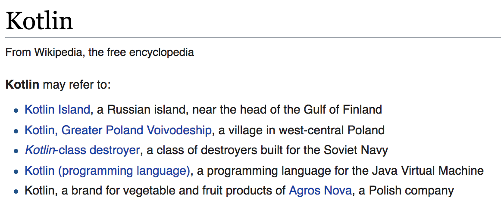

- In browser: https://try.kotlinlang.org
- OR in Eclipse/Intellij etc : https://github.com/Kotlin/kotlin-koans
-
- 'master' is starting point for exercises
- 'resolutions' for solution

class Greeter(val name : String) {
fun greet() {
println("Hello, ${name}")
}
}
fun main(args : Array<String>) {
Greeter("World").greet()
}
class Greeter(private val name : String) {
private var counter = 0
fun getGreeting(includeNumber: Boolean): String {
return if (includeNumber) {
"Hello, ${name}. Greeting message nr ${counter++}"
} else {
"Hello, ${name}"
}
}
}
fun main(args : Array<String>) {
Greeter("World").getGreeting(true)
}
Kotlin has both default and named arguments. This allows class definitions that are concise and precise
data class Person(val name: String, val country: String = "Norway", val age : Int = 18)
So, creating a new Person where you're fine with the default country, but want to change the age?
Person(name = "Arne Scheie", age = 73)
A person from Norway of age 18 could be created by
Person("Some name")
Whereas an empty constructor would give a compile error
Person()
>>> error: no value passed for parameter 'name'
Java version of the same would've looked like this. equals, hashCode, getters excluded for some brevity
public Person {
final String name;
final String country;
final Integer age;
public Person(String name) {
this(name, "Norway", 18);
}
public Person(String name, String country) {
this(name, country, 18);
}
public Person(String name, Integer age) {
this(name, "Norway", age);
}
public Person(String name, String country, Integer age) {
this.name = name;
this.country = country
this.age = age;
}
}
val verboseLambda : (Int) -> Boolean =
{ i : Int ->
println("lambda invoked")
i % 2 == 0
}
val result = verboseLambda(4)
// type inference
val tinyNumbers = listOf(1,2,3,4).filter{ n -> n < 3 }
// single argument sugar
val conciseLambda = listOf(1,2,3).filter{ it > 0}
var a: String = "abc" a = null // compilation error var b: String? = "abc" b = null
val a: String? = null
if (a != null) {
print("String of length ${a.length}") //good
}
val length: Int = a!!.length // NPE
val length2: Int? = a?.length // good
data class SmallCompany(var employee: Person? = null)
data class Person(var middleName: String? = null)
val middleName: Int? =
SmallCompany().employee?.middleName?.length // nullfun smartCast1(x: Any) {
if (x is String) {
print(x.length) // x is automatically cast to String
}
}
fun smartCast2(x: Any) {
if (x !is String) return
print(x.length) // x is automatically cast to String
}
fun ofType(x: Any) {
when (x) {
is String -> println(x.length) // Smart casts work for when-expressions
in 1..10 -> println("x is in the range 1..10")
is IntArray -> println(x.sum())
else -> println("x is unknown")
}
}
// Object Expression ~= anonymous inner classes in Java
window.addMouseListener(object : MouseAdapter() {
override fun mouseClicked(e: MouseEvent) {
// ...
}
})
class Car(val color = "blue") // Class
object Lock { // Object declaration
val i = 3
}
println(Car().color)
println(Lock.i)
class MyClass {
companion object {
fun create(): MyClass = MyClass()
}
}
MyClass.create() // access as if "static" in class
Kotlin allows you to write custom extensions for any class. This is a power that needs to be used carefully, or you'll end up in extension hell; Kotlin's version of implicits hell
fun List<Int>.largerThanN(n: Int) = this.filter { it > n }
listOf(5, 7, 8, 11, 1, 2, 3).largerThanN(5)
>>> [7, 8, 11]
Kotlin also supports extension properties.
val <T> List<T>.lastIndex: Int
get() = size - 1
listOf(1,2,3,4,5).lastIndex
>>> 4
Kotlin's collections are immutable by default, so default constructors returns an immutable collection
val x = listOf(1)
x.add(2)
>>> error: unresolved reference: add
val y = x + 2
>>> y: [1,2]
x
>>> x: [1]
If you want a mutable list you'll have to explicitly ask for it, and a mutable list works much like java's. The add method returns a boolean saying whether or not the object was added
val x = mutableListOf(1)
>>> [1]
x.add(2)
x
>>> [1,2]
They also support the usual functional collection suspects
val exampleList = listOf(1,2,3,4,5)
val x = exampleList.reduce { acc, el -> acc + el }
>>> x: Int
x
>>> 15
val (evens, odds) = listOf(1, 2, 3, 4).partition { it % 2 == 0 }
evens
>>> [2,4]
odds
>>> [1,3]
Java groupBy
Map<Gender, List<String>> groupedBy = roster.stream()
.collect(
Collectors.groupingBy(
Person::getGender,
Collectors.mapping(
Person::getName,
Collectors.toList()))
);
Kotlin groupBy
val groupedBy: Map<Gender, List<String>> = roster.groupBy(
keySelector = { it.gender },
valueTransform = { it.name }
)